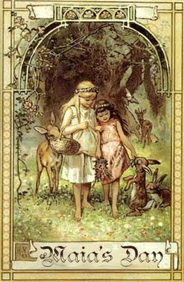

|
En la víspera del 30 de Abril al uno de mayo se celebra uno de los cuatro Sabats mayores. Es junto con Samahin, la noche más impotante del año. Para los celtas marcaba el comienzo del verano, así como Samahin el inicio del invierno. El mes de mayo recibe su nombre de la diosa Maia (Bona Dea), diosa de la primavera y del alba. Más tarde pasaría a ser el mes de la Virgen María.
El nombre antiguo celta de esta festividad es Beltane o Beltaine: derivado del gaélico irlandés 'Bealtaine' y del gaélico escocés 'Bealtuinn', que significa fuego de Bel, dios celta de la luz y el fuego (Bel, Beli o Belinus). El aumento de la luz solar diaria por estas fechas es más que notable.
El Sabat comienza con el atardecer del 30 de Abril. Los celtas contaban los días a partir de la puesta de sol ya que la noche era el origen primario de la luz.
En la víspera se apagaban todos los fuegos de la comunidad para que el elemento estuviera totalmente ausente en la tierra. Al amanecer ascendían a la montaña sagrada para encender el fuego de manera ritual. La hoguera estaba formada por nueve maderos sagrados, de los cuales encendían otros pequeños que utilizaban para conducir al ganado a través del humo como símbolo de purificación. Se creía que dicho fuego tenía propiedades curativas y que las brujas vestidas de cielo saltaban por encima para asegurarse protección y purificación. Algunos pueblos también hacían a las vacas pasar por encima de las brasas como ritual de protección y buena suerte.
En general se celebraba la llegada del buen tiempo y el paso seguro del ganado a otros pastos.

En Floralia, la fiesta romana que se iniciaba el 27 de abril y duraba hasta el 3 de Mayo, se rendía culto a la diosa Flora, otra de las manifestaciones de la Madre Tierra junto con Maia, Fauna y Ops. Las ciudades se adornaban con flores y la gente se vestía con coronas de flores y vestidos llamativos.
Beltane es la fiesta de la fertilidad. El famoso palo de mayo es el símbolo fálico por excelencia. Las cintas que se trenzan en torno suyo gracias a los danzantes representan la vulva. Tenemos así la representación de las dos energías necesarias para la creación. Es el momento perfecto para recrearnos en el amor de los dioses y atraer esa pasión a nuestras vidas.
En muchos países se sigue eligiendo al rey y a la reina de mayo. Los elegidos representaban a la nueva generación y la
unión del Dios y la Diosa.
Walpurgis es el nombre que recibe esta noche mágica en Alemania. Cuenta la leyenda que una abadesa del siglo XIII tenía extraordinarios poderes contras las fuerzas del mal que tomaban más fuerza durante esa noche. Se la considera una encarnación opuesta de la diosa pagana Waldburg, madre de todas las brujas. Se dice que en esta noche las brujas se reúnen sobre una colina.
Los irlandeses suelen decorar los árboles por estas fechas y bailan al aire libre para celebrar la primavera. En Asiria se ataban lazos al Árbol de la Vida.
La diosa Aserá cananea era adorada en forma de árbol en el Solsticio de Invierno y en la víspera de Mayo. Se depositaban a sus pies regalos para los pobres como manera de honrarla.
Para los neopaganos, esta es la noche en la que los dioses bajo el aspecto juvenil comparten el deseo sexual. La Diosa
celebrará su embarazo en Litha.

Correspondencias:
Gemas: citrino, ámbar, ojo de tigre, cuarzo rosa, esmeralda.
Comida: frutos rojos del bosque, té de rosas, vino tinto, granadas.
Incienso: rosa, ámbar.
Flores: lirio, retama.
Colores: rojo y blanco (por el semen y la sangre), colores alegres como el verde y el amarillo.
Amuletos: collares, pulseras y coronas.
Actividades: sexo sagrado o abstinencia, trenzar, coser, tejer, hacer rituales de protección, encender pequeñas hogueras y saltar por encima...
Planeta: Plutón.
Símbolos: pentagrama, círculo, triángulo.
Dioses: Maia, Bel, Waldburg, María.
|
 RSS
RSS